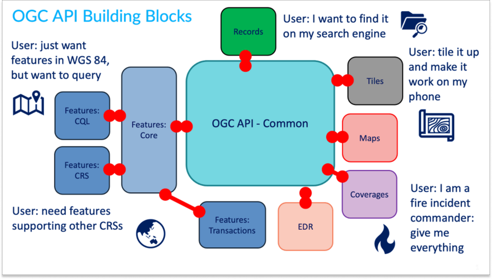
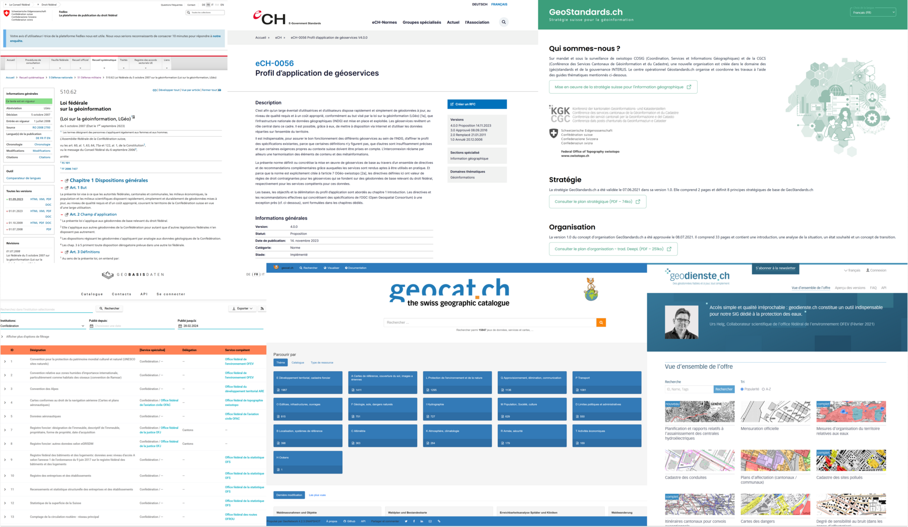
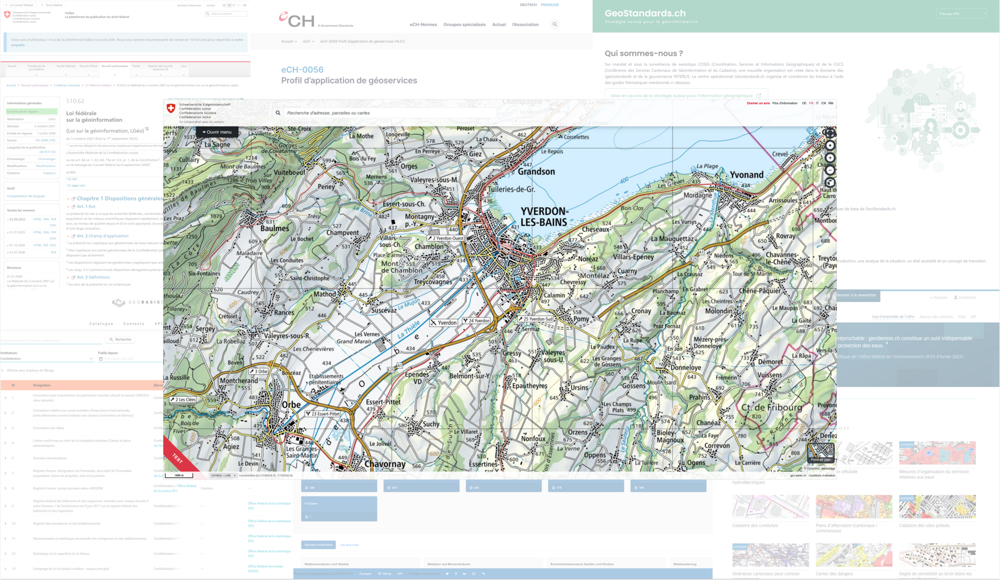
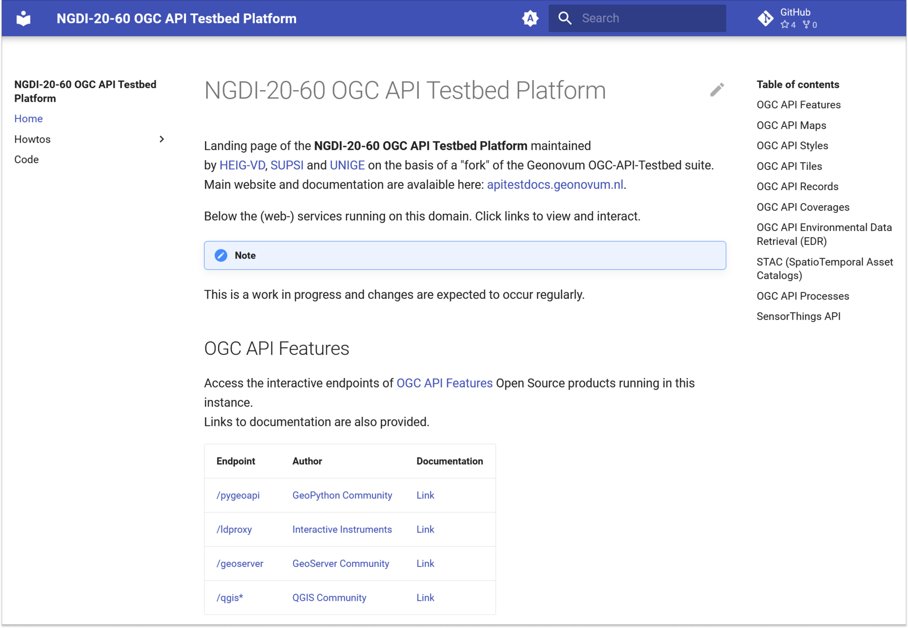
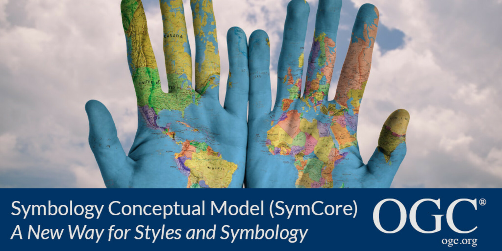

<!-- <h2 style="color: #FFFFFF">Géostandardisation</h2> <h3 style="color: #FFFFFF">/ʒeɔstɑ̃daʁdizasjɔ̃/</h3> --> ## Geostandardisation ### /ʒeɔstɑ̃daʁdizasjɔ̃/ <!-- .slide: data-background="./assets/mei-background.jpg" --> Note: Le terme "Géostandardisation" est une contraction des termes "Géo" et "Standardisation". Il désigne l'ensemble des normes, standards et bonnes pratiques qui régissent la production, la diffusion et l'utilisation de l'information géographique et permettant notamment d'afficher des cartes sur le web. Nous allons dans un 1er temps nous intéresser aux tendances actuelles en matière de webmapping pour ensuite nous pencher sur les enjeux de la géostandardisation et les perspectives futures. --- ## MTTBH Hello [`<mapml-viewer>`](https://maps4html.org/web-map-doc/fr/) ! <iframe height="450" style="width: 100%;" scrolling="no" title="MapML Demo" src="https://codepen.io/MediaComem/embed/zYbgzda?default-tab=result" frameborder="0" loading="lazy" allowtransparency="true" allowfullscreen="true"> See the Pen <a href="https://codepen.io/MediaComem/pen/zYbgzda"> MapML Demo</a> by Ingénierie des médias (<a href="https://codepen.io/MediaComem">@MediaComem</a>) on <a href="https://codepen.io">CodePen</a>. </iframe> Note: Commençons par le commencement ou peut-être la fin. Cette slide porte l'intitulé "MTTBH" pour "Message to take back home". Si vous ne deviez retenir qu'une seule chose de cette présentation, c'est ce petit élément mapml-viewer. Cette balise correspond à une extension HTML liée au standard MapML en cours d'élaboration par le W3C. ---- ### MapML - Future norme W3C - Code minimal(~~JavaScript~~) - Cartes accessibles - [MapML Use Case, Requirement, and Capability Matrix](https://maps4html.org/UCR-MapML-Matrix/mapml-ucrs-fulfillment-matrix.html) <!-- [Référence](https://static1.bocoup.com/assets/2022/06/08184700/Maps-for-HTML-Roadmap-March-2022-1.pdf) --> Note: MapML résulte du constat que l'information géospatiale sur le Web est fragmentée, insuffisamment couverte par les normes du Web et manque d'interopérabilité et d'accessibilité. Cela soulève des obstacles importants à son utilisation efficace et équitable. En 2016 Peter Rushforth: publie un article intitulé ["vision for maps on the web"](https://medium.com/@prushforth/the-open-geoweb-f4b2e74fa003#.tvba0cnub) et crée le [Maps for HTML community group](https://maps4html.org/) du W3C dans la foulée. Ce groupe de travail a pour objectif de définir la norme MapML ayant elle même pour but de décrire des cartes sur le web de manière minimaliste, accessible et sans nécessiter de JavaScript. Minimaliste car permettant de décrire des cartes avec un minimum de balises HTML et sans avoir à utiliser de JavaScript. Accessible car permettant de décrire des cartes de manière à ce qu'elles soient accessibles à tous, y compris les personnes en situation de handicap. Quels avantages par rapport aux libraires conventionnelles de webmapping me direz vous? Et bien, leurs possibilités ont été éprouvées par le community group et sont répertoriées dans une matrice de compatibilité. Cette matrice permet de comparer les fonctionnalités de MapML avec celles des librairies de webmapping conventionnelles et de définir la norme MapML en tant que telle. ---- ### MapML <iframe height="450" style="width: 100%;" scrolling="no" title="MapML Demo" src="https://codepen.io/MediaComem/embed/zYbgzda?default-tab=result" frameborder="0" loading="lazy" allowtransparency="true" allowfullscreen="true"> See the Pen <a href="https://codepen.io/MediaComem/pen/zYbgzda"> MapML Demo</a> by Ingénierie des médias (<a href="https://codepen.io/MediaComem">@MediaComem</a>) on <a href="https://codepen.io">CodePen</a>. </iframe> <mapml-viewer projection="APSTILE" zoom="3" lat="90.0" lon="0.0" controls> Note: On observant de plus près le code HTML, on peut voir que la balise mapml-viewer est utilisée pour décrire la carte. Elle prend notamment comme paramètres le niveau de zoom, la latitude et la longitude du centre de la carte et un paramètre controls pour contrôler les différentes couches de la carte. On peut également identifier une balise layer- qui est utilisée pour décrire une couche de la carte. Elle prend en paramètre l'URL de la source de la couche, le label de la couche et un paramètre checked pour activer la couche. Mais à quoi correspond cette URL? Et bien, il s'agit dans le cas présent de la carte de base de l'océan arctique. Mais comment configurer une carte de base? Et bien, c'est là que les standards de géostandardisation entrent en jeu. --- ## OGC API Building Blocks - [Spatial Data on the Web Best Practices](https://www.w3.org/TR/sdw-bp/)  Note: C'est là que les standards de l'Open GeoSpatial Consortium (ou OGC pour les intimes) entrent en jeu. Les standards de l'OGC sont des normes ouvertes qui permettent d'interagir avec des données géospatiales. Suite à la publication des "Spatial Data on the Web Best Practices" par le W3C, l'OGC a démarré un processus de normalisation des API RESTful pour accéder à des données géospatiales. L'OGC API Maps est un des 6 blocs de construction de l'OGC API. OGC API Maps est le bloc de construction qui définit une classe d'exigence pour des endpoints HTML. C'est à dire qu'il définit des exigences pour des endpoints qui retournent des pages HTML pouvant contenir des éléments MapML. --- ## Interopérabilité <img src="assets/EIF.png" alt="EIF" height="350"> Note: Mais comment mettre en oeuvre ces briques technologiques? Si je devais résumer la géostandardisation en une image, ce serait celle-ci. Il s'agit du cadre européen d'interopérabilité (ou EIF). L'interopérabilité est ici à comprendre comme la capacité de systèmes ou d'organisations à travailler ensemble (inter-opérer). L'EIF est un cadre de référence pour la mise en oeuvre de l'interopérabilité dans le cadre de la commission européenne. Il est composé de 4 niveaux: technique, sémantique, organisationnelle et juridique. ---- ### Contexte Suisse  Note: En Suisse, ces concepts se matérialisent dans l'infrastructure natonale de l'INDG qui englobe bien entendu la Confédération (IFDG) mais aussi les admnistrations cantonales de même que les autres autorités. L'INDG est régi par la loi fédérale sur la géoinformation (LGéo) et ses ordonnances (OGéo et OGéo-swisstopo). Ces textes de loi (LGéo) définissent les principes et responsabilités de chaque autorité concernant l'échange des géodonnées de bases (geobasisdaten.ch) et géoservices liés (geodienste.ch) devant être correctement documentés par des métadonnées (geocat.ch) de manière à rendre ces données accessibles et réutilisables dans le cadre d'infrastuctures de données géospatiales (IDG) matérialisées par exemple par map.geo.admin.ch ou encore MapNV.ch. ---- ### Contexte Suisse  ---- ### Projets MEI - [Testbed platform des nouvelles API de l'OGC](https://ogc.heig-vd.ch/) - [eCH-0056 Profil d’application de géoservices](https://www.ech.ch/fr/ech/ech-0056/4.0.0) - FGDM4GS (INTERLIS vs "The World!")  Note: Quelle place pour le MEI dans tout ça? Eh bien, nous contribuons activement à un travail de veille technologique autour des nouvelles API de l'OGC au travers de différents projets alloués par les moyens dédiés à l'INDG. C'est le cas notamment du projet INDG 20-60 dans le cadre duquel nous avons mis en place une plateforme de test des nouvelles API de l'OGC. Nous avons également contribué à la rédaction du profil d'application de géoservices eCH-0056. Enfin, nous travaillons actuellement sur un projet visant à comparer INTERLIS, un langage de modélisation de données géographiques suisse avec les standards de l'OGC. --- ## Perspectives et enjeux futurs  - [SymCore 2.0](https://opengeospatial.github.io/ogcna-auto-review/18-067r4.html) - OGC API Maps Cartographic Layout - [Maps for HTML](https://www.w3.org/community/maps4html/) community group Note: Vous le savez sans doute (ou peut-être pas), nous travaillons avec Olivier sur l'élaboration d'un standard de représentation cartographique. Il s'agit de SymCore pour Symbology Conceptual Model and Encodings. De manière plus générale, cela revient à définir un modèle conceptuel de symbologie permettant de multiples encodings. Nous aimerions également contribuer à l'élaboration de l'extension "Cartographic Layout" de la norme OGC API Maps visant à standardiser les éléments graphiques des "map viewers", ce qui devra naturellement se faire de manière conjointe avec le groupe de travail "Maps for HTML" du W3C. En conclusion, vous pouvez constater que les enjeux de la géostandardisation sont nombreux et que les perspectives futures sont prometteuses.